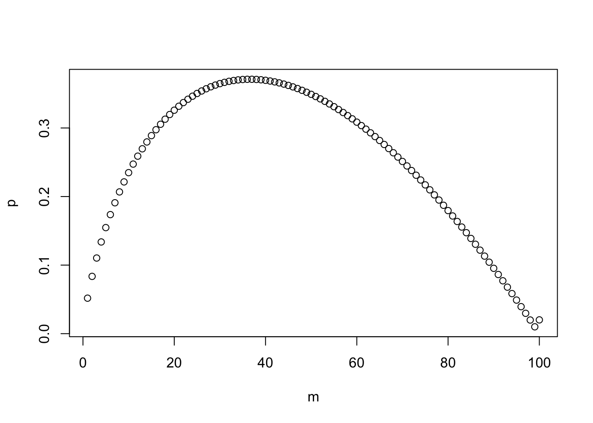

N <- 100
m <- 1:100
p <- sapply(m, function(m) m/N*sum(1/seq(m, N-1)))
plot(m, p)
The question
How many people should you date before you settle down with someone for marriage? The answer is you should date 37% of your potential options and choose the next one who is better. 1
The 37% Rule, also known as the Optimal Stopping Theory, provides a strategy to maximize the chances of making the best choice when faced with a sequence of options where decisions are irreversible. It suggests that you should review and reject the first 37% of the total options without selecting any, then choose the next option that is better than all those previously considered.
Mathematical framework
Let’s assume there’s a pool of \(N\) people out there from which you are choosing. We’ll also assume that you have a clear-cut way of rating people. You know who is the best to be your partner. We will call that person Mr/Ms X. The people that you will show up in random order. X can show up anywhere in the sequence. Sadly, a person you have dated and then rejected isn’t available to you any longer later on. So you cannot date all of them and pick the best one.
Your dating strategy is to date \(M\) of the \(N\) people and then settle with the next person who is better. Our task is to find the optimal \(M\). If \(M\) is too small, you will likely land with someone before X shows up. If \(M\) is too large, X will likely pass X and pick someone less optimal. Of course, there is no perfect solution. We want to find the \(M\) that maximizes the probability of landing X.
Let \(P(M,N)\) be the probability of successfully picking X if you date \(M\) people out of \(N\) and then go for the next person who is better than the previous ones. The overall probability is: \[\begin{aligned}P(M,N) &= P(\text{Success | X in position 1}) + P(\text{Success | X in position 2}) + \cdots \\ &+ P(\text{Success | X in position N}) \end{aligned}\\ \]
For a given value of \(M\), if X is among the first \(M\) people you date, then you have missed your chance. The probability of settling with X is zero. Therefore, the first \(M\) terms are all zero.
If X is in \(M+1\), you’re in luck: since X is better than all others so far, you will pick X for sure. Therefore, \[P(\text{Success }|M+1) = P(\text{X is in position } M+1)= \frac{1}{N}\]Since X is equally likely to be in any position, the probability of X being in \(M+1\) out of \(N\) people is \(1/N\).
If X is in \(M+2\), you’ll pick him/her up as long as the \(M+1\)st person didn’t have a higher rating than all the previous \(M\) people.
\[ \begin{aligned} P(\text{Success} | M+2)&=P(\text{Success})P(\text{X is in position } M+2)\\ &=\frac{M}{M+1}\frac{1}{N} \end{aligned} \]
This is because the highest rated person can be anywhere in the sequence \(1,\dots,M+1\). We want him/her to be in the first \(M\) people. The chance is \(M/(M+2)\).
Similarly, if X is the \(M+3\) person, you’ll pick him/her up to as long as neither the \(M+1\) nor the \(M+2\) person have a higher rating than all the previous \(M\) people. The probability is
\[ P(\text{Success} | M+3)=\frac{M}{M+2}\frac{1}{N} \]
Putting them all together, we have
\[ \begin{aligned} P(M,N) &=\frac{1}{N} +\frac{M}{N(M+1)} +\frac{M}{N(M+2)}+\dots +\frac{M}{N(N-1)}\\ &= \frac{M}{N}\left(\frac{1}{M}+\frac{1}{M+1} +\frac{1}{M+2}+\dots+\frac{1}{N-1}\right) \end{aligned} \]
Maximizing your chance of success
For a given number of \(N\) people you want to choose \(M\) such that \(P(M,N)\) is the highest. That is you want to find the \(M\) such that
\[ P(M-1,N) < P(M,N) \text{ and } P(M+1,N) < P(M,N) \]
We can ask the computer to find the solution.
N <- 100
m <- 1:100
p <- sapply(m, function(m) m/N*sum(1/seq(m, N-1)))
plot(m, p)
For \(N=100\), the highest probability if achieved when \(M=37\).
The limiting solution
We can find the solution analytically if \(M,N\) are large. For large \(n\), the harmonic sequence can be approximated by the logarithm function:
\[ 1+\frac{1}{2}+\frac{1}{3}+\dots+\frac{1}{n}\approx \int_1^{n+1}\frac{1}{x}dx=\ln(n+1)\approx \ln(n)+\gamma \]
where \(\gamma\) is a constant.
The optimal condition is
\[ \frac{M-1}{N}\left(\frac{1}{M-1}+\dots+\frac{1}{N-1}\right) < \frac{M}{N}\left(\frac{1}{M} + \dots+\frac{1}{N-1}\right) < \frac{M+1}{N}\left(\frac{1}{M+1}+\dots+\frac{1}{N-1}\right) \]
After some manipulation, this is equivalent to
\[ \frac{1}{M+1}+\dots+\frac{1}{N-1}< 1 <\frac{1}{M}+\frac{1}{M+1}+\dots+\frac{1}{N-1} \]
When \(M,N\) are large, this condition is approximated by
\[ \ln(N-1)-\ln(M+1) < 1 < \ln(N-1)-\ln(M) \]
Also, for large \(M,N\), it makes no difference between \(M\pm 1\) and \(M\). So the condition effectively becomes
\[ \ln(N)-\ln(M)=\ln\left(\frac{N}{M}\right)\approx 1 \]
This means \(N/M \approx e\) and \(M/N\approx 1/e \approx 0.3679\).
See Kissing the frog: A mathematician’s guide to mating and Strategic dating: The 37% rule for reference.↩︎